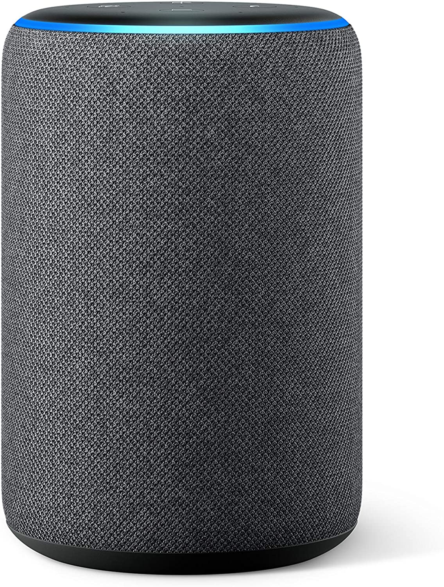

Lo más destacable es la cama articulada, esto sin duda es un avance muy relevante en tema de independencia de personas mayores como a gente con movilidad física reducida ya qué en un futuro, esto posibilitará una gran ayuda con solo unos comandos de voz.
Como podemos ver, la cama está conectada por internet, esto nos permite incluso acceder a ella fuera de aquí.
